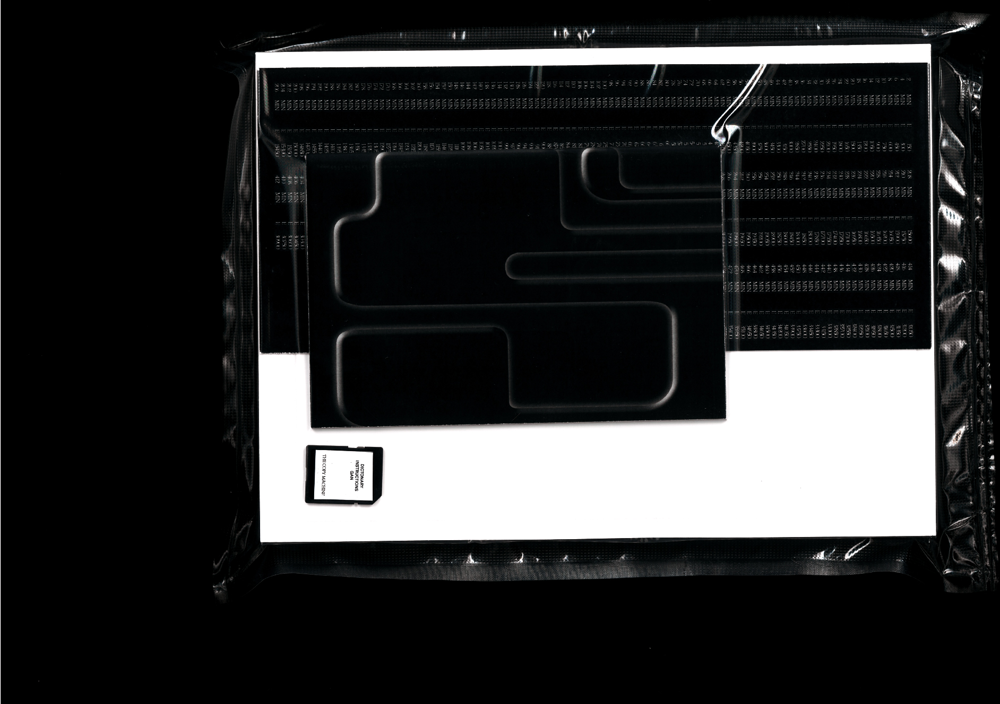
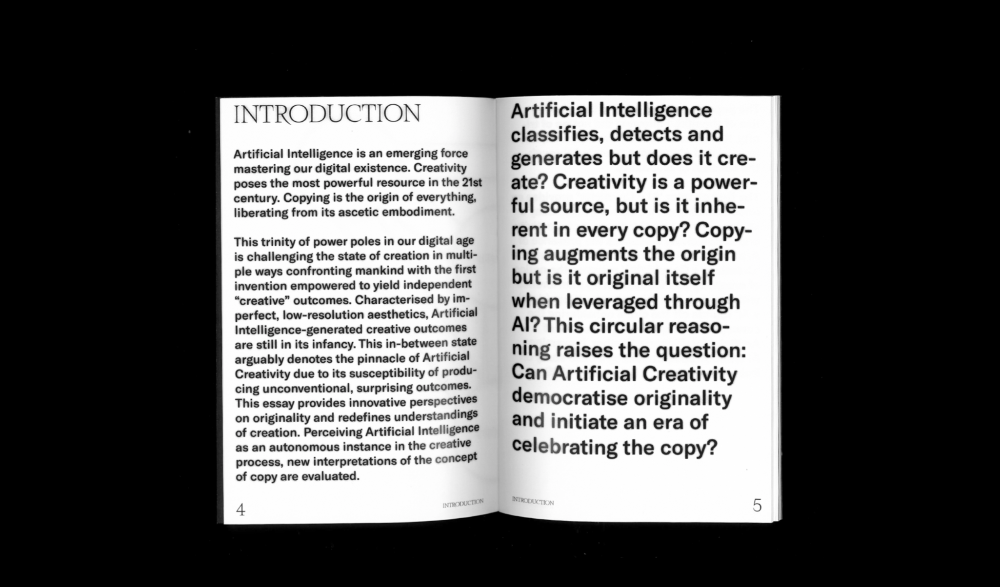

- 
- 
In the digital age of the internet, copying has significantly changed its initial meaning. Most algorithms are fed with Big Data in order to produce new creative outcomes. Whether the algorithm produces or rather reproduces and therefore copies the input data remains to be discussed therefore challenges our definition of copyright. In the context of creativity, the interplay of human and machine elicits the question of authorship, copyright and authenticity of the generated output. The notion of Artificial Creativity is questioning the concept and construct of ownership in many ways. By exploring the boundaries within the concept of copy and authenticity in relation to AI-created output, the objective of this work is to innovate new ways of understanding originality. The project intends to outline possible forms of creativity and authenticity by using Artificial Intelligence as an “autonomous” instance in the creative process.